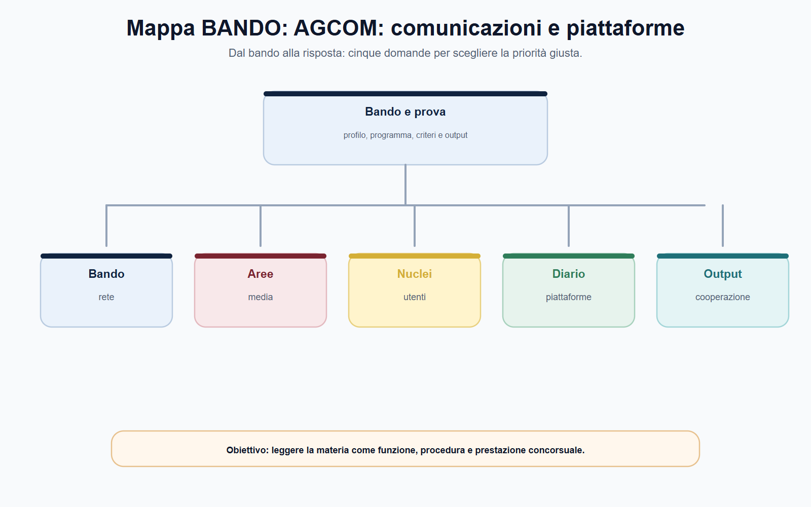
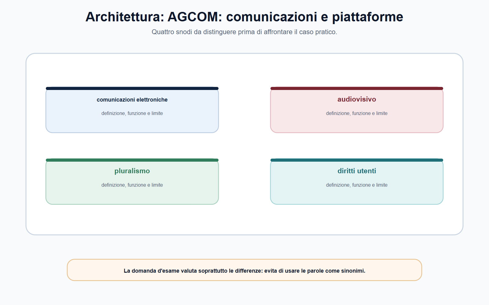
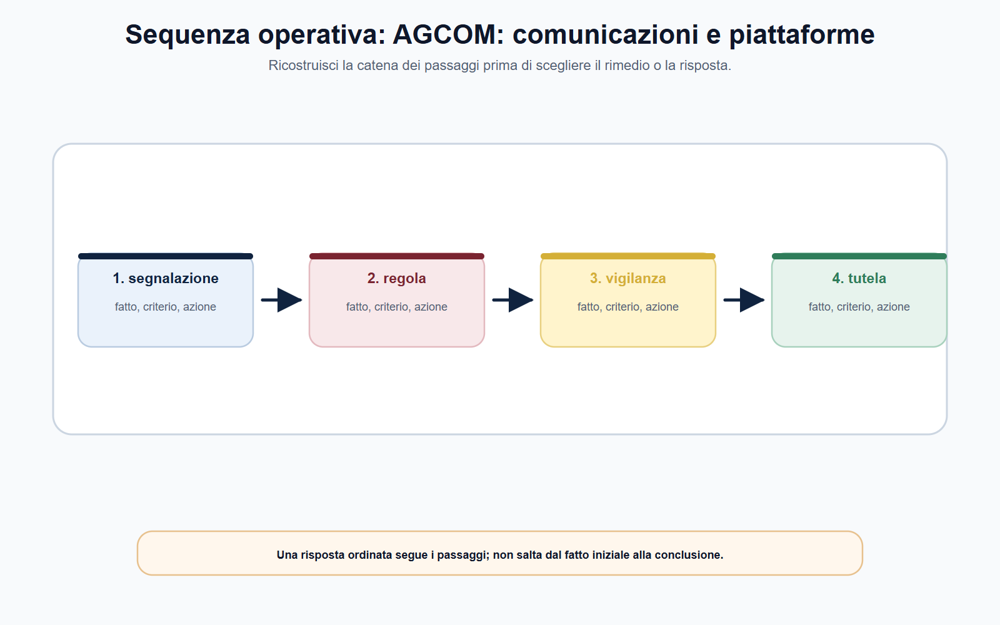
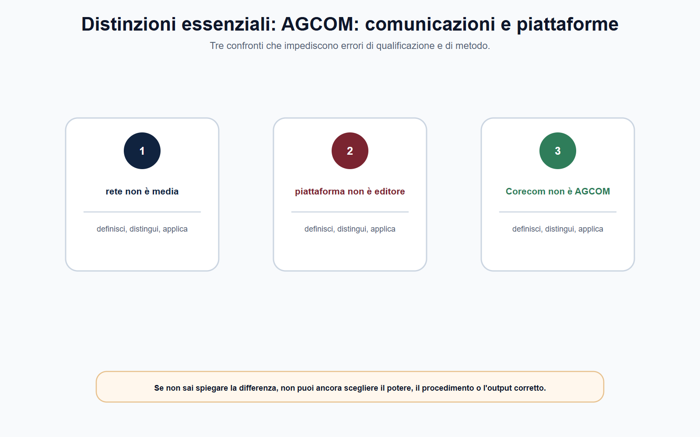

VOL-05 · Capitolo 10
M-FC05
AGCOM:
comunicazioni, media, utenti e piattaforme
AGCOM opera in un ecosistema in cui reti, contenuti, mercati, diritti degli utenti e piattaforme si incontrano. Questa vicinanza genera sovrapposizioni apparenti. L’Autorità non è competente su «tutto ciò che accade online»: esercita regolazione, vigilanza, controllo, ispezione e sanzione nei limiti delle attribuzioni.
01 · Il problema in prova
AGCOM non è il Garante privacy
La legge n. 249/1997 è la fonte istitutiva. Il Codice delle comunicazioni elettroniche, il Testo unico dei servizi di media audiovisivi, le norme europee e i regolamenti dell’Autorità completano un quadro stratificato. Studiare AGCOM significa imparare un metodo di ripartizione delle competenze, non memorizzare un elenco statico di delibere.
Che cos’è
Un’Autorità di regolazione su reti e servizi di comunicazione, media, tutela degli utenti e, nei limiti delle fonti, piattaforme. Privacy, concorrenza e rimedi contrattuali restano su binari propri.
A che serve in prova
A non partire dal nome dell’app. Si parte dal servizio, dal fatto contestato, dall’utente e dalla fonte: così si individua il potere di AGCOM, di un Corecom, della Commissione europea o di altra autorità.
Nel digitale non partire dal nome dell’app o della piattaforma.
Parti dal servizio, dal fatto, dall’utente e dalla fonte. Solo così individui il potere di AGCOM, di un Corecom, della Commissione o di altra autorità. DSA, TUSMA, diritto d’autore, privacy e concorrenza possono interagire: non sono sinonimi.
02 · BANDO
Cinque decisioni su questo capitolo
Un caso digitale va classificato per oggetto prima di scegliere l’acronimo più noto.
| Che cosa fai | Se la salti | |
|---|---|---|
| B — Bando | Cerca comunicazioni elettroniche, media, utenti, Corecom, piattaforme, DSA. | Studi un potere digitale indistinto. |
| A — Aree | Separa reti, contenuti, rapporto utente-operatore, obblighi europei della piattaforma. | Applichi il TUSMA a ogni post o il DSA a ogni disservizio. |
| N — Nuclei | AGCOM ≠ Garante privacy; DSA ≠ DMA; Corecom ≠ DSC. | Attribuisci al Corecom ogni reclamo online. |
| D — Diario | Segna «AGCOM decide ogni rimozione», conciliazione = sentenza, DSA = censura. | Ripeti le tre trappole all’orale. |
| O — Output | Mappa servizio–obbligo–autorità, percorso utente-operatore, memo fatto–obbligo–competenza. | Sanzione presunta senza fonte. |
03 · Schema
Tre domande diverse
Le comunicazioni elettroniche riguardano reti, accesso, interconnessione, servizi e mercati della trasmissione. I media audiovisivi e radiofonici richiedono pluralismo, tutela dei minori, comunicazione politica e TUSMA. Le piattaforme online sono soggette a una pluralità di fonti: DSA, DMA, e altre ancora.

La tavola orienta la lettura delle comunicazioni elettroniche e separa il perimetro dalle eccezioni media e DSA.
04 · Oggetto
Qualificare il fatto, non l’acronimo
Il DMA riguarda regole concorrenziali ex ante per determinati gatekeeper e non attribuisce ad AGCOM una competenza generale su ogni profilo della concorrenza digitale. Anche quando un servizio è fruito online, non si salta dalla parola «video» al DSA né si applica il TUSMA a ogni post.
| Oggetto del caso | Prima domanda | Percorso da verificare |
|---|---|---|
| Disservizio di telefonia o accesso internet | Quale diritto contrattuale o regolatorio dell’utente? | Codice, regolamento utenti-operatori, Conciliaweb/Corecom. |
| Accesso o interconnessione tra imprese | Quali obblighi di rete o mercato? | Codice comunicazioni e regolamenti AGCOM. |
| Programma audiovisivo | Quale obbligo media, pluralismo o tutela? | TUSMA e disciplina di settore. |
| Moderazione su piattaforma | Quale obbligo DSA e chi è competente? | DSA, DSC, Commissione e cooperazione. |
| Opera digitale illecitamente diffusa | Rientra nella procedura di diritto d’autore online? | Fonti sul diritto d’autore e regolamento AGCOM. |
05 · AGCOM
Reti, media, utenti, DSC italiano
Regola comunicazioni elettroniche e media, disciplina le controversie utenti-operatori, coopera nel DSA come Coordinatore dei servizi digitali. Non è un potere generale su ogni dato personale o su ogni contenuto in rete.
05 · Garante privacy
Protezione dei dati, non TUSMA
Trattamento, diritti dell’interessato, poteri correttivi e sanzionatori del GDPR. Un caso digitale può toccare entrambi i piani: ciascuno richiede norma, autorità e procedura proprie. Non si attribuisce ad AGCOM la competenza privacy.
06 · Utenti e Corecom
Un percorso, non una lamentela
La tutela dell’utente richiede un percorso riconoscibile: contratto o servizio, disservizio, reclamo all’operatore quando previsto, canale di conciliazione, eventuale definizione, rimedi giudiziari distinti. I Corecom sono organi funzionali dell’Autorità per le competenze delegate: non sono semplici sportelli privi di funzione.
| Passaggio | Controllo necessario |
|---|---|
| Qualificazione | Il problema riguarda utente-operatore, operatori tra loro o contenuto? |
| Reclamo | È previsto o utile il previo reclamo? Quali prove vanno conservate? |
| Conciliazione | Quale organismo e quale procedura? È tutela extragiudiziale, non una sentenza. |
| Definizione e giudizio | Ricorrono presupposti e competenza? Quale tutela resta davanti al giudice? |
Oltre alle controversie, i Corecom possono svolgere funzioni delegate nel radiotelevisivo locale, rettifica, vigilanza e Registro degli operatori di comunicazione. In un caso concreto si verifica quale funzione è effettivamente delegata.
07 · Architettura
Media e tutela degli utenti restano distinti
Pluralismo, tutela dei minori, diritti fondamentali e comunicazione politica sono temi propri del settore media e vanno ricondotti al TUSMA. L’uso di un mezzo digitale non sostituisce questa verifica. È corretto descrivere AGCOM come autorità di regolazione e, nei casi previsti, sanzionatoria nel settore audiovisivo; è improprio assegnarle una competenza illimitata su ogni informazione in rete.

La tavola mette a confronto media e pluralismo e tutela degli utenti senza sovrapporli.
08 · DSA
Governance cooperativa, non censura
Il DSA non trasferisce ogni potere sulle piattaforme a un solo soggetto nazionale. La Commissione europea esercita competenze esclusive sulle piattaforme online e sui motori di ricerca di dimensioni molto grandi per gli obblighi supplementari; il Digital Services Coordinator vigila e coordina a livello nazionale. AGCOM svolge il ruolo di DSC per l’Italia.
Obblighi
Trasparenza, procedure, segnalazioni, reclami, pubblicità, tracciabilità e, nei casi previsti, rischi sistemici. Non una generica «censura dei contenuti».
Segnalazione
Non determina automaticamente la rimozione. Il DSA disciplina meccanismi e garanzie, inclusi reclami interni e risoluzione extragiudiziale.
Cooperazione
AGCOM coopera con Commissione, altri DSC e autorità nazionali. Il segnalatore attendibile non ordina la rimozione: le sue segnalazioni ricevono il trattamento prioritario previsto.
09 · Sequenza
Dai fatti alla competenza
Il diritto d’autore online segue un’altra base. AGCOM è autorità amministrativa competente nel perimetro definito dalle fonti sul diritto d’autore, sul commercio elettronico e sul regolamento in materia di tutela del diritto d’autore sulle reti. Non va confuso con il DSA: contenuto illegale, diritto d’autore, moderazione e privacy possono sovrapporsi sui fatti, ma ciascuno richiede la propria norma.
Il DMA individua obblighi e divieti per i gatekeeper designati, con un ruolo centrale della Commissione. AGCOM può essere coinvolta nelle funzioni nazionali e nella cooperazione, ma non applica indistintamente ogni regola europea alle piattaforme.
Ricostruisci i passaggi prima di scegliere il rimedio: non saltare dal fatto alla rimozione.

10 · Distinzioni
Tre piani che non coincidono
Un’impresa segnala che una piattaforma combina dati e limita l’interoperabilità. Prima di concludere per una violazione del DMA, occorre verificare se sia un gatekeeper designato, quale servizio di piattaforma di base sia coinvolto e quale obbligo specifico venga in rilievo. Se un utente contesta la rimozione di un contenuto, il problema può riguardare il DSA. Se la controversia nasce da fatturazione e connettività, il percorso nazionale delle comunicazioni elettroniche resta distinto.

Se non sai spiegare la differenza tra reti, media, DSA e privacy, non puoi ancora scegliere il potere.
11 · Caso guidato
Account sospeso e doppia fatturazione
Un utente segnala che una piattaforma ha sospeso il suo account senza motivazione comprensibile; nello stesso periodo l’operatore di accesso addebita due fatture dopo il passaggio a un nuovo contratto. Chiede al Corecom di ordinare il ripristino dell’account e di ottenere il risarcimento completo dei danni.
| Piano | Che cosa fare |
|---|---|
| Doppia fatturazione | Contratto, reclamo, normativa sulle comunicazioni elettroniche, conciliazione o definizione. Il Corecom può essere coinvolto nelle funzioni delegate. |
| Sospensione account | Qualificare il servizio intermediario e l’obbligo DSA o altra fonte. Un reclamo al DSC ex art. 53 non equivale a un ordine immediato di ripristino. |
| Risarcimento | Non promettere un ristoro integrale nel procedimento amministrativo. Tutela extragiudiziale, definizione e azione giudiziaria hanno funzioni diverse. |
| Chiusura | Due fatti, due fonti, due canali. Non attribuire al Corecom competenze DSA non previste. |
12 · Verifica
Due domande da saper spiegare
Illustri le competenze AGCOM su comunicazioni, utenti e piattaforme.
AGCOM regola, vigila e sanziona nei limiti delle fonti. Nelle comunicazioni elettroniche tutela reti, mercati e utenti; per le controversie è previsto reclamo, conciliazione e, se del caso, definizione, anche tramite Corecom. Nel media rilevano pluralismo, minori e TUSMA. Nel DSA AGCOM è DSC italiano; la Commissione ha competenze esclusive sulle VLOP e VLOSE per gli obblighi supplementari.
Ogni reclamo contro una piattaforma online va al Corecom?
No. Il Corecom opera nelle funzioni delegate, soprattutto nelle controversie utenti-operatori di comunicazioni elettroniche. Per una presunta violazione del DSA si verifica il canale del regolamento e il ruolo di AGCOM quale DSC; per diritto d’autore, privacy o concorrenza valgono fonti e autorità diverse.
13 · Mini-esercizio
Prima la fonte, non la sanzione
Per ciascun fatto indica la prima verifica. L’esercizio è corretto se la prima risposta è sempre una fonte e un perimetro.
| Fatto | Prima verifica |
|---|---|
| Operatore non risponde a un reclamo su cessazione della linea | Contratto, reclamo, regolamento utenti-operatori e canale Corecom/Conciliaweb. |
| Emittente locale diffonde un contenuto che potrebbe violare obblighi di programmazione | TUSMA, soggetto interessato e funzione di vigilanza competente. |
| Piattaforma non spiega una decisione di moderazione | Tipo di servizio, obbligo DSA e canale di reclamo applicabile. |
| Sito diffonde senza autorizzazione un’opera audiovisiva | Perimetro della procedura sul diritto d’autore online e prove dell’istanza. |
14 · Errori
Distinzioni da tenere ferme
Errore
«Il DSA impone ad AGCOM di decidere direttamente ogni rimozione di contenuto.»
Correzione
Il DSA stabilisce obblighi, procedure e una governance cooperativa. Segnalazioni, decisioni delle piattaforme, reclami, organismi ADR, DSC e Commissione hanno ruoli distinti. La competenza si ricostruisce dal tipo di servizio e dall’obbligo contestato.
Non inventare termini o competenze. AGCOM non è il Garante privacy. Media e tutela degli utenti non sono espressioni equivalenti. Un memo in inglese (Issue – Rule – Assessment – Next step) non inventa la competenza né anticipa l’accertamento.
15 · Da tenere ferme
Cinque regole, con il perché
1. AGCOM opera su comunicazioni elettroniche, media, utenti e piattaforme con poteri che dipendono dalla fonte e dal servizio.
2. I Corecom esercitano funzioni delegate, in particolare nella tutela territoriale e nelle controversie utenti-operatori.
3. La conciliazione è una tutela extragiudiziale e non una sentenza.
4. Nel DSA AGCOM è il DSC italiano, ma la Commissione mantiene competenze esclusive sulle VLOP e VLOSE per gli obblighi supplementari.
5. DSA, TUSMA, diritto d’autore, privacy e concorrenza possono interagire ma non sono sinonimi. AGCOM non è il Garante privacy.
Prossimo capitolo
CONSOB: mercati, intermediari e tutela dell’investitore
Dal digitale ai mercati finanziari. Stessa famiglia, nuovo fascicolo: informativa, intermediari e investitore non coincidono con piattaforme, media o privacy.